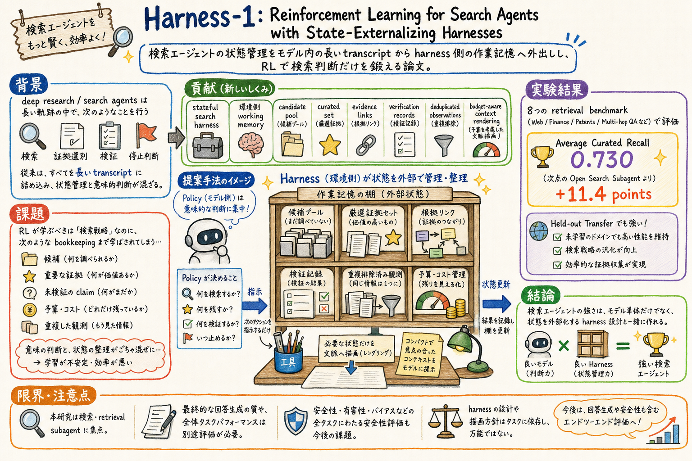

第一の貢献は、stateful search harness を検索 agent の訓練環境として明示したこと。candidate pool、curated set、evidence links、verification records などを harness が保持する。

どんな論文か
検索 agent は、検索クエリを作り、文書を読み、証拠を選び、未確認の claim を検証し、どこで止めるかを決める。従来の訓練では、これらの判断と、候補や証拠を覚えておく bookkeeping が、長くなる transcript の中で混ざりやすい。
Harness-1 は、この混線を分ける。policy は意味的な検索判断を担い、harness は候補プール、重要度付き curated set、証拠リンク、検証記録、圧縮・重複除去済み観測、予算に応じた context rendering を管理する。
論文の主張は、検索 agent の性能はモデル単体だけでなく、状態をどこに置くかで変わるというもの。RL は、復元可能な状態管理まで学ぶより、外部化された明示状態の上で検索行動を学ぶほうがよい、という設計思想がある。
評価では、web、finance、patents、multi-hop QA を含む 8 つの retrieval benchmark で平均 curated recall 0.730 を報告し、次点の open search subagent を 11.4 points 上回ったとされる。held-out transfer でも強いという点が、単なる domain fitting ではない示唆になる。
読む時は、個別スコアだけでなく、candidate pool、verification records、budget-aware context rendering がどんな agent workflow の部品になるかを見るとよい。paper-watch や deep research の実装設計へ接続しやすい。
Harness-1 は、search agents を state-externalizing harness と組み合わせて訓練する論文である。検索 agent は検索だけでなく、証拠の管理、検証状況、残り制約、停止判断まで扱うため、長い transcript の中で状態管理が重くなる。
論文は、復元可能な bookkeeping を policy の内部に押し込むのではなく、環境側の harness が持つべきだと主張する。これにより、policy は検索、選別、検証、停止という意味的な判断に集中できる。
モデルは 20B search agent、位置づけとしては retrieval subagent である。最終回答生成そのものより、検索と証拠収集をどう強くするかに焦点がある。
課題と貢献
policy は何を検索し、何を残し、何を検証し、いつ止めるかを決める。harness は作業記憶と context rendering を担う。
transcript 内で暗黙に状態を再構成させるより、外部化された検索状態を使うことで汎化しやすい探索行動を狙う。
web、finance、patents、multi-hop QA などにまたがる点が、調査 agent の実務に近い。
手法のしくみ
1
agent は検索タスクを受け取り、policy が次に何を検索するかを決める。検索結果や観測はそのまま長い transcript に積まれるのではなく、harness 側の working memory に整理される。
2
harness は candidate pool を持ち、候補文書や証拠を蓄積する。重要なものは importance-tagged curated set に入り、証拠リンクや検証記録と結びつく。
3
観測は圧縮され、重複除去される。これにより、context window はただの履歴置き場ではなく、現在の判断に必要な状態だけを描画する場所になる。
4
policy は、どの文書を残すか、どの claim を検証するか、どのタイミングで十分と判断するかを選ぶ。harness は budget-aware context rendering によって、残り予算に合う形で状態を提示する。
検証結果
論文は、8 つの retrieval benchmark で Harness-1 が average curated recall 0.730 を達成したと報告する。
次点の open search subagent より 11.4 points 高いとされ、より大きな frontier-model searcher とも競争的だったと述べられている。
明示的な検索状態の上で RL することが、訓練ドメイン外にも移りやすい retrieval behavior につながる可能性を示している。
評価対象は retrieval subagent としての性能であり、最終回答の完全な忠実性や安全性をこれだけで保証するものではない。
限界と読みどころ
この論文の中心は検索と証拠収集であり、最終回答生成、引用の忠実性、ユーザーへの説明品質までは別の評価が必要になる。
stateful harness が強くなるほど、harness の設計、ログ、検証記録、context rendering の品質が性能に直結する。モデルだけを差し替えれば済む話ではない。
論文 abstract から確認できる範囲では、公開 code への言及はあるが、運用環境での保守性やセキュリティ設計は別途読み込みが必要である。
deep research の全工程にそのまま適用するには、検索後の統合、矛盾処理、最終レポート生成、引用検査などの部品と接続する必要がある。
読みながら見る図表や節
- 読むときは、従来型を「長い transcript の中に全部詰める」方式として見ると分かりやすい。検索履歴、証拠、検証状態、予算が一つの文脈に混ざる。
- 提案型は、harness 側に作業台や整理棚を置くイメージで読む。candidate pool、curated set、verification records が外側にあり、policy は判断に集中する。
- budget-aware context rendering は、保存された状態を全部見せるのではなく、その時の判断に必要な形で文脈へ出す部品として見る。
- 結果は、単に recall が上がった話ではなく、状態管理を外部化した訓練が held-out transfer にも効くかもしれない、という示唆として読む。
次に読むなら
- Is Agent Memory a Database? と並べると、長期 memory の state lifecycle と、検索中の working state externalization がつながる。
- Where Do Deep-Research Agents Go Wrong? と並べると、検索 agent の状態管理と trajectory-level error localization をセットで考えられる。
- Argus と並べると、証拠収集、証拠グラフ、追加探索、検証の workflow 設計に広げやすい。
- おい丸運用に引くなら、paper-watch や article-page-publisher の探索状態を、会話文脈ではなく candidate pool / evidence / verification records として artifact 化する方向が見える。
読後Q&A
この論文の中心問いは？
検索 agent の状態管理を model transcript の中に抱え込ませるべきか、それとも harness 側へ外出しすべきか、という問いである。
Harness-1 は何をする？
stateful search harness の中で RL 訓練された 20B search agent で、検索、証拠選別、検証、停止判断を行う retrieval subagent である。
harness は何を保持する？
candidate pool、重要度付き curated set、compact evidence links、verification records、圧縮・重複除去済み観測、予算に応じた context rendering を保持する。
policy は何に集中する？
何を検索するか、どの文書を残すか捨てるか、何を検証するか、いつ止めるかという意味的な判断に集中する。
従来方式の問題は？
長くなる transcript の中で、検索判断と recoverable bookkeeping が混ざり、RL が本来 harness で管理できる状態管理まで学ばされる点である。
結果はどうだった？
8 つの retrieval benchmark で average curated recall 0.730 を報告し、次点の open search subagent を 11.4 points 上回ったとされる。
なぜ held-out transfer が大事？
訓練ドメインを超えて検索行動が移るなら、明示状態の上で RL する設計が単なる暗記や domain fitting ではない可能性を示すからである。
この論文は deep research 全体の解決策？
中心は retrieval subagent であり、最終回答生成、引用忠実性、安全性、ユーザー説明までは別途評価と設計が必要である。
実務で一番使える視点は？
調査状態を会話文脈へ積み続けるのではなく、候補、証拠、検証記録、予算を外部 artifact として管理する視点である。
おい丸運用に持ち込むなら？
paper-watch や article-page-publisher の探索ログを candidate pool、curated evidence、verification records に分けて保存し、必要な状態だけを後段へ渡す設計にできる。
一言でいうと？
検索 agent は、全部を頭の中で覚えるより、整理された作業台を持つほうが強くなる、という論文である。